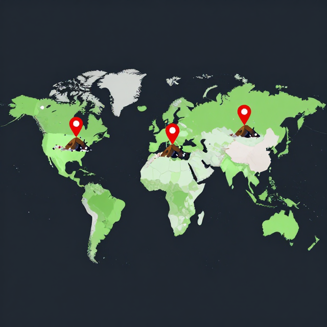

零廢棄小戰士!
從垃圾到黑金的冒險
今天的垃圾,藏了三個大問題
口號:少產生、再利用、會堆肥、勤分類!
垃圾從哪裡來?
認識掩埋與焚燒這兩條老路
全球每年產生 23 億公噸垃圾
比喻:如果排成垃圾車隊,可以繞地球好幾圈!
台灣 4 合 1:全球前段班,但還能更好
4 合 1 系統:民眾分類 + 清潔隊 + 回收商 + 回收基金 = 我們做得很好,但還能做得更好!
什麼是掩埋(Landfill)?
把垃圾埋進去
需要鋪防滲層、收集滲出水與甲烷氣體
佔空間、會污染
污染地下水、釋放甲烷(暖化效應是 CO₂ 的 80 倍以上)
提問:為什麼不能一直把垃圾埋下去?
什麼是焚燒(Incineration)?
用高溫燒掉
體積大幅減少,現代焚化爐還能發電
底渣 + 廢氣
剩下約 1/4 底渣與飛灰仍須掩埋;處理不當會排放戴奧辛等有害物質
結論:減量 > 回收 > 堆肥 > 焚化 > 掩埋。讓送進垃圾場的東西越少越好!
垃圾的分解大考驗
震撼:你今天丟的塑膠袋,你的曾曾曾孫都還看得到!
堆肥的魔法與健康土壤
廚餘其實是大地的維他命
堆肥:把廚房垃圾變成黑金
堆肥的 5 個超能力
磁鐵卡配對:把每個好處配對到正確的科學原因!
健康土壤的 5 大工作
有趣事實:1 茶匙的健康土壤裡,有超過 10 億個微生物!沒有健康土壤,就沒有穩定的食物。
堆肥桶 DIY:寶特瓶版
| 材料 / 步驟 | 內容 |
|---|---|
| 容器 | 寶特瓶 / 花盆 |
| 綠色料 | 果皮、菜葉、咖啡渣(提供氮) |
| 褐色料 | 落葉、碎報紙、紙板(提供碳) |
| 比例 | 綠色料:褐色料 ≈ 1 : 3 |
| 維護 | 每週翻攪一次,保持濕潤但不滴水 |
| 完成時間 | 2–3 個月後 → 黑金腐植質 |
學生預測:兩週後會發生什麼?(留待第 4 節觀察)
世界另一端的垃圾故事
脆弱社區的真實生活
食物不是垃圾!
小組計算:若我們班每天少丟 500 克廚餘,一年省多少?
世界另一端的垃圾故事

提問:如果你是住在那邊的小孩,你希望世界怎麼幫你?
全球南北知識交換
印度 Goonj
- 把舊衣物變成生活物資
- 解決鄉村婦女衛生需求
肯亞 Takataka
- 都市分類回收社會企業
- 從垃圾找出資源價值
巴西 Catadores
- 拾荒者組成合作社
- 讓拾荒成為正式職業
角色扮演:台灣學校 × 肯亞學校視訊會議——我們可以分享 4 合 1 經驗,也能向他們學「惜物」智慧。
行動與反思
我是零廢棄小戰士
5R 行動指南
參考教育部 KEE 教案《垃圾危機》(0064) 5R 原則
我的家庭挑戰:一週任務
- 和爸媽一起秤家裡一天的垃圾(公斤)
- 分類出可回收與廚餘各多少
- 計算減量百分比(本週 vs 上週)
- 選 5R 中至少 3 項,寫下這週要做的具體行動
我可以做什麼?
從家庭、學校到社區,有哪些行動?
家 庭
- 家裡做寶特瓶堆肥桶
- 正確分類四色廚餘
- 自備餐具與環保袋
- 修補東西不丟掉
學 校
- 校園黑金站收集落葉與廚餘
- 四色分類桶值日生秤重
- 減包裝午餐
- 環保小尖兵輪值
社 區
- 每月「社區環保日」
- 學校堆肥送在地農場
- 國際姊妹校垃圾故事交流
- 教家人正確分類
希望之牆:寫給 2030 年的學校
完成後貼到教室後牆,組成全班的「希望之牆」。
三個關鍵字,一起記住
5R 從 Reduce 開始
減 30% 垃圾與甲烷
洗淨、乾燥、分對
少產生、再利用、會堆肥、勤分類——我是零廢棄小戰士!